Composite Power for Factorial ANCOVA: Planning Simple Effects, an Interaction, and a Moderator
Ken Kelley
July 2026
Source:vignettes/composite_power_ancova.Rmd
composite_power_ancova.RmdThis vignette is a worked tutorial on planning statistical power for a factorial design in which more than one effect matters. It is organized around a single running example, a 2 × 2 experiment, and it does three things that a single call to a power function does not:
- it displays the population at every stage, since a design can only be evaluated against an explicit statement of the world it is meant to detect;
- it shows the arithmetic, so that every value returned by a
DMARfunction can be reproduced by hand; and - it distinguishes analytic (closed-form) power from Monte Carlo (simulation) power, and identifies where each is appropriate.
The same design is planned for the power of individual effects, for composite power (all effects detected in a single study), for a variance-absorbing covariate, and for a three-way interaction with a continuous moderator. The framework is the model comparison perspective of Maxwell, Delaney, and Kelley (2027).
The Design and the Population
The study is a between-subjects experiment with two crossed two-level factors:
- Agent: a task performed by a Human or by a Machine.
- Condition: the participant works under the Control protocol or under the Treatment, which imposes time pressure and degraded information.
The outcome is a task performance score, for which higher values are better (for example, diagnostic accuracy). Our best prior estimates of the four population cell means, together with the common within-cell variance, are in every cell.
The Cell Means in a Two-by-Two Layout
Displayed the way an analysis of variance text would display them, with the marginal (main effect) means in the margins:
mu <- c(6, 4, 3.1, 2.9) # Agent varies fastest: HC, MC, HT, MT
sigma2 <- 2
sigma <- sqrt(sigma2)
m <- matrix(mu, nrow = 2,
dimnames = list(Agent = c("Human", "Machine"),
Condition = c("Control", "Treatment")))
layout_2x2 <- cbind(m, "Row mean" = rowMeans(m))
layout_2x2 <- rbind(layout_2x2,
"Column mean" = colMeans(layout_2x2))
knitr::kable(layout_2x2, digits = 2,
caption = "Population cell means, with marginal means. Higher scores are better; the common within-cell variance is 2.")| Control | Treatment | Row mean | |
|---|---|---|---|
| Human | 6 | 3.1 | 4.55 |
| Machine | 4 | 2.9 | 3.45 |
| Column mean | 5 | 3.0 | 4.00 |
The same layout as a figure, with the four cells shaded and the margins in gray:
base <- data.frame(
Agent = rep(c("Human", "Machine"), 2),
Condition = rep(c("Control", "Treatment"), each = 2),
mu = mu, stringsAsFactors = FALSE)
margins <- rbind(
data.frame(Agent = c("Human", "Machine"), Condition = "Row mean",
mu = c(mean(mu[c(1, 3)]), mean(mu[c(2, 4)])), stringsAsFactors = FALSE),
data.frame(Agent = "Column mean", Condition = c("Control", "Treatment"),
mu = c(mean(mu[1:2]), mean(mu[3:4])), stringsAsFactors = FALSE),
data.frame(Agent = "Column mean", Condition = "Row mean",
mu = mean(mu), stringsAsFactors = FALSE))
grid_all <- rbind(base, margins)
grid_all$type <- ifelse(grid_all$Agent == "Column mean" |
grid_all$Condition == "Row mean", "margin", "cell")
grid_all$Agent <- factor(grid_all$Agent,
levels = rev(c("Human", "Machine", "Column mean")))
grid_all$Condition <- factor(grid_all$Condition,
levels = c("Control", "Treatment", "Row mean"))
ggplot(grid_all, aes(Condition, Agent, fill = type)) +
geom_tile(color = "white", linewidth = 1.6) +
geom_text(aes(label = sprintf("%.2f", mu)), size = 5,
color = ifelse(grid_all$type == "cell", "white", "grey15")) +
scale_fill_manual(values = c(cell = agent_cols[["Machine"]], margin = "grey85"),
guide = "none") +
labs(title = "The 2 × 2 design with population cell means",
subtitle = "Grey margins are the marginal (main-effect) means",
x = "Condition", y = "Agent")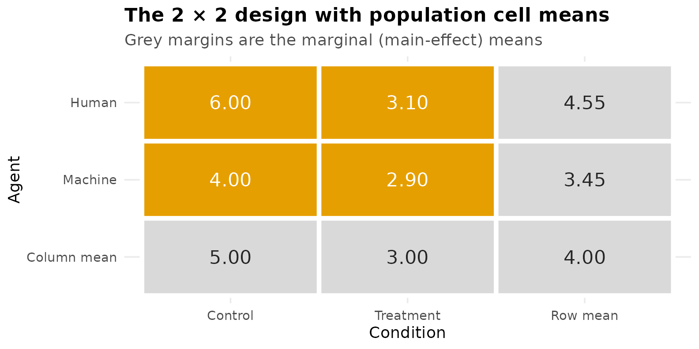
Viewing the Population
The most informative figure in a power analysis is drawn before any power is computed: the population being assumed. Two views of the same four means make the structure clear. On the left is the interaction plot, with error bars at within-cell standard deviation as a reminder of the variability each effect must be detected against. On the right are the marginal means that the two main effects compare.
pop <- expand.grid(Agent = c("Human", "Machine"),
Condition = c("Control", "Treatment"))
pop$mu <- mu
pop$sd <- sigma
pop$Condition <- factor(pop$Condition, levels = c("Control", "Treatment"))
p_interaction <- ggplot(pop, aes(Condition, mu, color = Agent, group = Agent)) +
geom_errorbar(aes(ymin = mu - sd, ymax = mu + sd),
width = 0.08, linewidth = 0.5, alpha = 0.8) +
geom_line(linewidth = 1) +
geom_point(size = 3) +
geom_text(aes(label = mu), vjust = -0.9, size = 3.4, show.legend = FALSE) +
scale_color_manual(values = agent_cols) +
labs(title = "Population cell means",
subtitle = "cell means with ±1 within-cell SD",
y = "Performance score (higher is better)") +
ylim(2, 7.5)
marg <- data.frame(
label = factor(c("Control", "Treatment", "Human", "Machine"),
levels = c("Control", "Treatment", "Human", "Machine")),
kind = c("Condition", "Condition", "Agent", "Agent"),
value = c(mean(mu[1:2]), mean(mu[3:4]), mean(mu[c(1,3)]), mean(mu[c(2,4)])))
p_marginals <- ggplot(marg, aes(label, value, fill = kind)) +
geom_col(width = 0.65, alpha = 0.9) +
geom_text(aes(label = round(value, 2)), vjust = -0.5, size = 3.4) +
scale_fill_manual(values = c(Agent = agent_cols[["Human"]],
Condition = unname(grDevices::palette.colors(3))[3]), name = NULL) +
labs(title = "Marginal means", subtitle = "what the two main effects compare",
x = NULL, y = "Population marginal mean") +
ylim(0, 6.5)
if (has_patchwork) p_interaction + p_marginals else p_interaction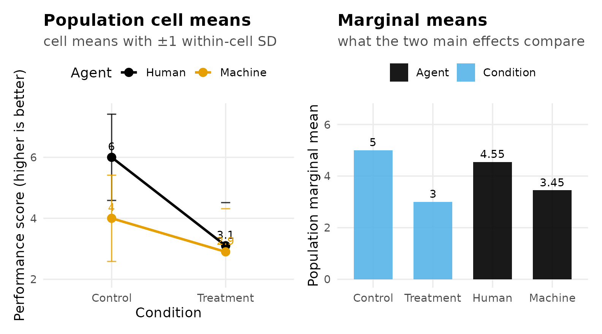
The substantive pattern is visible before any arithmetic. Under the Control protocol, humans (6.0) outperform machines (4.0). The Treatment lowers performance for both, but it lowers human performance considerably more, and the two groups end up nearly equal (3.1 and 2.9). The treatment therefore eliminates the human advantage. That non-parallelism of the two lines is the interaction, and it is the reason the design is of interest.
The Effects Worth Planning
A 2 × 2 design contains a family of effects rather than a single effect. A simple effect is the effect of one factor evaluated at a fixed level of the other, and a 2 × 2 has four of them, two for each factor. It is worth setting out all four alongside the interaction before deciding which the design must be able to detect.
Simple Effects of Both Factors
Slicing by Agent gives the performance cost imposed by the Treatment, separately for each type of agent:
Slicing by Condition gives the human advantage, separately within each condition:
The interaction can be written from either slicing, and it is the same effect either way. Expressed as a contrast whose positive weights sum to , it is half the difference between the two simple effects of a factor:
The figure below annotates the two Treatment-cost simple effects directly on the population means.
ggplot(pop, aes(Condition, mu, color = Agent, group = Agent)) +
geom_line(linewidth = 1.1) +
geom_point(size = 3) +
annotate("segment", x = 2.06, xend = 2.06, y = mu[3], yend = mu[1],
color = agent_cols[["Human"]], linewidth = 0.7,
arrow = arrow(ends = "both", length = unit(0.10, "in"))) +
annotate("segment", x = 2.14, xend = 2.14, y = mu[4], yend = mu[2],
color = agent_cols[["Machine"]], linewidth = 0.7,
arrow = arrow(ends = "both", length = unit(0.10, "in"))) +
annotate("text", x = 2.06, y = mean(mu[c(1,3)]), hjust = -0.15, size = 3.3,
color = agent_cols[["Human"]], label = "psi[1]==2.9", parse = TRUE) +
annotate("text", x = 2.16, y = mean(mu[c(2,4)]), hjust = -0.15, size = 3.3,
color = agent_cols[["Machine"]], label = "psi[2]==1.1", parse = TRUE) +
scale_color_manual(values = agent_cols) +
labs(title = "The interaction as a difference between simple effects",
subtitle = "psi_AB = (psi_1 - psi_2)/2 = (2.9 - 1.1)/2 = 0.9",
y = "Performance score") +
coord_cartesian(xlim = c(1, 2.5), ylim = c(2.5, 6.5))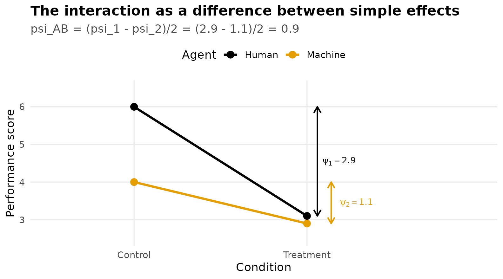
Contrast Weights
Every effect above is a contrast, a set of weights
on the cell means. DMAR requires contrast weights in
normalized form: the positive weights sum to
,
the negative weights sum to
,
and therefore all weights sum to
.
Written this way,
is directly interpretable as a difference between (possibly averaged)
means, and effects expressed on different slices remain comparable.
contrasts_list <- list(
"Treatment cost | Human" = c( 1, 0, -1, 0),
"Treatment cost | Machine" = c( 0, 1, 0, -1),
"Human adv. | Control" = c( 1, -1, 0, 0),
"Human adv. | Treatment" = c( 0, 0, 1, -1),
"Interaction" = c( .5, -.5, -.5, .5))
wt <- as.data.frame(do.call(rbind, contrasts_list))
names(wt) <- c("H,C", "M,C", "H,T", "M,T")
wt$`sum +` <- sapply(contrasts_list, function(w) sum(w[w > 0]))
wt$`sum -` <- sapply(contrasts_list, function(w) sum(w[w < 0]))
wt$`psi` <- sapply(contrasts_list, function(w) sum(w * mu))
knitr::kable(wt, digits = 2,
caption = "Contrast weights in normalized form. Positive weights sum to 1, negative weights to -1.")| H,C | M,C | H,T | M,T | sum + | sum - | psi | |
|---|---|---|---|---|---|---|---|
| Treatment cost | Human | 1.0 | 0.0 | -1.0 | 0.0 | 1 | -1 | 2.9 |
| Treatment cost | Machine | 0.0 | 1.0 | 0.0 | -1.0 | 1 | -1 | 1.1 |
| Human adv. | Control | 1.0 | -1.0 | 0.0 | 0.0 | 1 | -1 | 2.0 |
| Human adv. | Treatment | 0.0 | 0.0 | 1.0 | -1.0 | 1 | -1 | 0.2 |
| Interaction | 0.5 | -0.5 | -0.5 | 0.5 | 1 | -1 | 0.9 |
Note the interaction row: the weights are rather than , which is what places the interaction on the same per-comparison scale as the simple effects and yields .
Analytic Power for a Single Contrast
The Arithmetic
Under the fixed-effects model with common variance and per cell, the estimated contrast has standard error
The statistic follows a central distribution with (here cells) when the null hypothesis is true, and a noncentral distribution with the same and noncentrality parameter
when it is false. Power is the probability that a noncentral variate falls beyond the ordinary two-sided critical value,
A useful benchmark is that two-sided power of at requires , approximately . Setting and solving for gives the approximation
Applying that approximation to all five contrasts, and comparing it
with the exact noncentral
search performed by ss_power_contrast:
lambda_target <- 2.80
hand <- data.frame(
effect = names(contrasts_list),
psi = sapply(contrasts_list, function(w) sum(w * mu)),
sum_c2 = sapply(contrasts_list, function(w) sum(w^2)))
hand$n_approx <- ceiling(lambda_target^2 * sigma2 * hand$sum_c2 / hand$psi^2)
exact <- t(sapply(contrasts_list, function(w) {
r <- ss_power_contrast(w, mu = mu, sigma_squared = sigma2, desired_power = .80)
c(n_exact = r$value[1], total_N = r$value[2], f = r$value[5])
}))
hand <- cbind(hand, exact)
knitr::kable(hand, digits = 3, row.names = FALSE,
caption = "Approximate n (from lambda = 2.80) and DMAR's exact search, for each contrast planned alone to power .80.")| effect | psi | sum_c2 | n_approx | n_exact | total_N | f |
|---|---|---|---|---|---|---|
| Treatment cost | Human | 2.9 | 2 | 4 | 5 | 20 | 0.725 |
| Treatment cost | Machine | 1.1 | 2 | 26 | 27 | 108 | 0.275 |
| Human adv. | Control | 2.0 | 2 | 8 | 9 | 36 | 0.500 |
| Human adv. | Treatment | 0.2 | 2 | 784 | 786 | 3144 | 0.050 |
| Interaction | 0.9 | 1 | 20 | 20 | 80 | 0.318 |
The approximation and the exact search agree closely; they differ slightly because the exact critical value depends on , which itself depends on .
The required sample sizes differ enormously across the five effects. The human advantage under Treatment, , would require 786 participants per cell (a total of 3,144) to reach . That effect is small precisely because the treatment nearly eliminates the human advantage, which is the very thing the interaction expresses. It is therefore not a sensible planning target, and the design instead targets the three effects that can be detected at a common sample size: the two Treatment costs and the interaction.
targets <- contrasts_list[c("Treatment cost | Human",
"Treatment cost | Machine", "Interaction")]
ss_power_contrast(targets[["Treatment cost | Machine"]],
mu = mu, sigma_squared = sigma2, desired_power = .80)| term | value |
|---|---|
| necessary_n_per_group | 27 |
| total_N | 108 |
| actual_power | 0.808 |
| noncentral_t_parm | 2.86 |
| effect_size_f | 0.275 |
Cohen’s for a one-degree-of-freedom effect is .
A Picture of One Power Calculation
The following figure shows, for the Treatment cost among Machines at its required sample size, the sampling distribution of under the null hypothesis (centered at zero) and under the alternative (shifted to ). Power is the shaded area of the alternative distribution beyond the critical value.
w_mach <- contrasts_list[["Treatment cost | Machine"]]
n_m <- ss_power_contrast(w_mach, mu = mu, sigma_squared = sigma2,
desired_power = .80)$value[1]
N_m <- 4 * n_m; df_m <- N_m - 4
SE_m <- sqrt(sigma2 * sum(w_mach^2) / n_m)
lam <- sum(w_mach * mu) / SE_m
tcrit <- qt(.975, df_m)
power_m <- pt(tcrit, df_m, ncp = lam, lower.tail = FALSE) +
pt(-tcrit, df_m, ncp = lam)
tg <- seq(-4, 8, length.out = 700)
den <- data.frame(t = tg, Null = dt(tg, df_m), Alt = dt(tg, df_m, ncp = lam))
ggplot(den, aes(t)) +
geom_area(data = subset(den, t > tcrit), aes(y = Alt), fill = accent, alpha = 0.35) +
geom_line(aes(y = Null), color = "grey45", linewidth = 0.8) +
geom_line(aes(y = Alt), color = agent_cols[["Machine"]], linewidth = 1) +
geom_vline(xintercept = tcrit, linetype = "dashed", color = "grey30") +
annotate("text", x = 0, y = 0.42, label = "Null distribution", size = 3.2, color = "grey35") +
annotate("text", x = lam, y = 0.42, label = "Alternative\n(noncentral)",
size = 3.2, color = agent_cols[["Machine"]]) +
annotate("text", x = tcrit + 1.7, y = 0.11,
label = sprintf("power = %.2f", power_m), size = 3.6, color = "grey15") +
labs(title = "Power for a single contrast",
subtitle = sprintf("Treatment cost among Machines: n = %d per cell, lambda = %.2f, critical t = %.2f",
n_m, lam, tcrit),
x = "t statistic", y = "Density")
The Shared Design
A design that must detect all three targeted effects has to satisfy the most demanding of them, so the required per-cell sample size is the largest:
per_cell <- sapply(targets, function(w)
ss_power_contrast(w, mu = mu, sigma_squared = sigma2, desired_power = .80)$value[1])
n_design <- max(per_cell)
c(per_cell, chosen_n = n_design, total_N = 4 * n_design)
#> Treatment cost | Human Treatment cost | Machine Interaction
#> 5 27 20
#> chosen_n total_N
#> 27 108At 27 per cell, a total of 108, each targeted effect attains at least . This is its marginal power, meaning the power of that effect considered on its own:
marg_pow <- sapply(targets, function(w)
ss_power_contrast(w, mu = mu, sigma_squared = sigma2,
n_per_group = n_design)$value[3])
round(marg_pow, 3)
#> Treatment cost | Human Treatment cost | Machine Interaction
#> 1.000 0.808 0.906Power curves display the same information across sample sizes. All five contrasts are shown; the curve that reaches farthest to the right among the targeted effects determines the sample size, and the human advantage under Treatment remains near the nominal level throughout this range.
n_grid <- 3:45
curve_df <- do.call(rbind, Map(function(w, nm) {
data.frame(effect = nm, n = n_grid,
power = sapply(n_grid, function(nn)
ss_power_contrast(w, mu = mu, sigma_squared = sigma2,
n_per_group = nn)$value[3]))
}, contrasts_list, names(contrasts_list)))
curve_df$effect <- factor(curve_df$effect, levels = names(contrasts_list))
ggplot(curve_df, aes(n, power, color = effect)) +
geom_hline(yintercept = 0.80, linetype = "dashed", color = "grey40") +
geom_vline(xintercept = n_design, linetype = "dotted", color = "grey40") +
geom_line(linewidth = 1) +
scale_color_manual(values = unname(grDevices::palette.colors(8))[c(1, 2, 3, 4, 7)], name = NULL) +
annotate("text", x = n_design + 0.7, y = 0.15, hjust = 0, size = 3.2,
color = "grey30", label = sprintf("design: n = %d per cell", n_design)) +
guides(color = guide_legend(nrow = 2)) +
labs(title = "Power curves for all five contrasts",
subtitle = "Among the targeted effects, the Treatment cost for Machines reaches .80 last",
x = "n per cell", y = "Marginal power (analytic)") +
ylim(0, 1)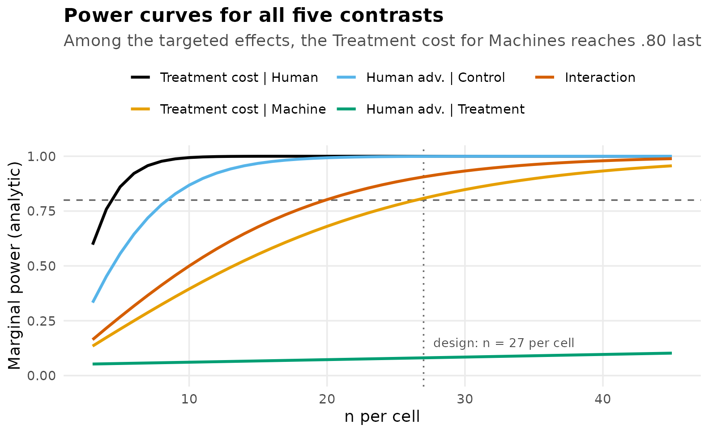
Composite Power: Detecting Every Effect in One Study
The design just constructed gives each targeted effect a marginal power of at least . It does not follow that the study has an chance of producing the full predicted pattern.
Composite power (also called compound, conjunctive, or all-or-none power) is the probability that every pre-specified effect is statistically significant in the same study. This is typically the event on which a theoretical claim rests: not that the interaction was significant, but that the interaction and both simple effects were significant together. Two considerations place it below any individual marginal power:
- It is a conjunction. Three tests must reject simultaneously, so composite power cannot exceed the smallest marginal power.
- The tests are not independent. All three are computed from the same four cell means and share a single pooled error term, so composite power is not the product of the marginal powers.
Because the joint distribution of several correlated noncentral statistics has no convenient closed form, composite power is estimated by Monte Carlo simulation: generate many datasets from the assumed population, apply all three tests to each, and record the proportion of datasets in which all three reject.
composite_power <- function(n, mu, sigma2, reps = 4000, alpha = 0.05, seed = 113) {
set.seed(seed)
a <- length(mu); N <- a * n; df <- N - a
tcrit <- qt(1 - alpha / 2, df)
W <- do.call(cbind, targets) # the three targeted contrasts
ssq <- colSums(W^2)
cellmeans <- matrix(rep(mu, each = n), nrow = n)
reject <- matrix(FALSE, reps, ncol(W))
for (r in seq_len(reps)) {
y <- cellmeans + matrix(rnorm(N, 0, sqrt(sigma2)), nrow = n)
ybar <- colMeans(y)
mse <- sum(sweep(y, 2, ybar)^2) / df # pooled error variance
psi <- as.numeric(t(W) %*% ybar) # contrast estimates
reject[r, ] <- abs(psi / sqrt(mse * ssq / n)) > tcrit
}
list(marginal = colMeans(reject),
composite = mean(rowSums(reject) == ncol(W)),
product = prod(colMeans(reject)))
}
mc <- composite_power(n_design, mu, sigma2)
round(c(smallest_marginal = min(mc$marginal),
product_if_independent = mc$product,
composite = mc$composite), 3)
#> smallest_marginal product_if_independent composite
#> 0.801 0.730 0.712At the sample size chosen for marginal power, composite power is approximately 0.71. The simulated marginal powers reproduce the analytic values, which confirms the simulation is behaving correctly. The product of the marginals, 0.73, is close to the composite but not equal to it, since independence does not hold.
bar_df <- data.frame(
quantity = factor(c("Treatment | Human", "Treatment | Machine", "Interaction",
"Product (independence)", "Composite (all three)"),
levels = c("Treatment | Human", "Treatment | Machine", "Interaction",
"Product (independence)", "Composite (all three)")),
power = c(mc$marginal, mc$product, mc$composite),
kind = c("marginal", "marginal", "marginal", "reference", "composite"))
ggplot(bar_df, aes(quantity, power, fill = kind)) +
geom_col(width = 0.68) +
geom_hline(yintercept = 0.80, linetype = "dashed", color = "grey35") +
geom_text(aes(label = sprintf("%.2f", power)), vjust = -0.4, size = 3.4) +
scale_fill_manual(values = c(marginal = agent_cols[["Machine"]],
reference = "grey65", composite = accent),
guide = "none") +
labs(title = "Each targeted effect reaches .80, but not all three jointly",
subtitle = sprintf("At n = %d per cell (N = %d)", n_design, 4 * n_design),
x = NULL, y = "Power") +
ylim(0, 1.05) +
theme(axis.text.x = element_text(size = 8.5))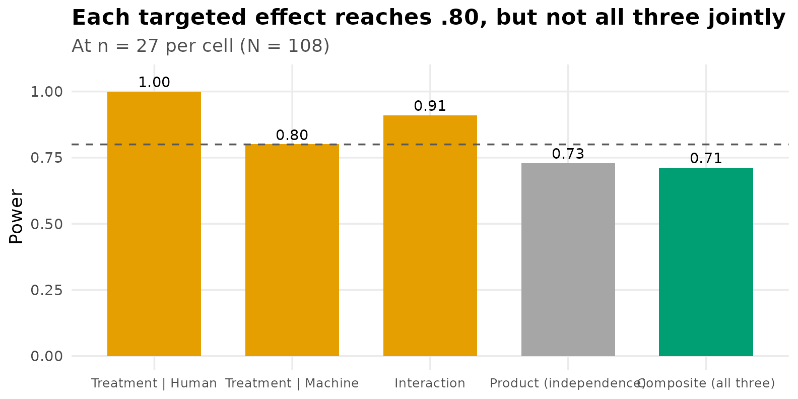
Sizing the Study for Composite Power
To obtain composite power of , meaning an probability that the entire predicted pattern is detected, the sample size must increase until the simulation reaches that value.
n_seq <- seq(20, 40, by = 2)
comp_seq <- sapply(n_seq, function(nn) composite_power(nn, mu, sigma2, reps = 3000)$composite)
weakest <- sapply(n_seq, function(nn)
ss_power_contrast(targets[["Treatment cost | Machine"]], mu = mu,
sigma_squared = sigma2, n_per_group = nn)$value[3])
n_comp80 <- n_seq[which(comp_seq >= 0.80)[1]]
comp_plot <- rbind(
data.frame(n = n_seq, power = weakest, curve = "Smallest marginal power"),
data.frame(n = n_seq, power = comp_seq, curve = "Composite power (all three)"))
ggplot(comp_plot, aes(n, power, color = curve)) +
geom_hline(yintercept = 0.80, linetype = "dashed", color = "grey40") +
geom_line(linewidth = 1) + geom_point(size = 1.6) +
geom_vline(xintercept = n_design, linetype = "dotted", color = "grey55") +
geom_vline(xintercept = n_comp80, linetype = "dotted", color = accent) +
scale_color_manual(values = c("Smallest marginal power" = agent_cols[["Machine"]],
"Composite power (all three)" = accent), name = NULL) +
labs(title = "The additional cost of requiring all three effects jointly",
subtitle = sprintf("Marginal design: n = %d per cell. Composite design: n = %d per cell.",
n_design, n_comp80),
x = "n per cell", y = "Power") +
ylim(0, 1)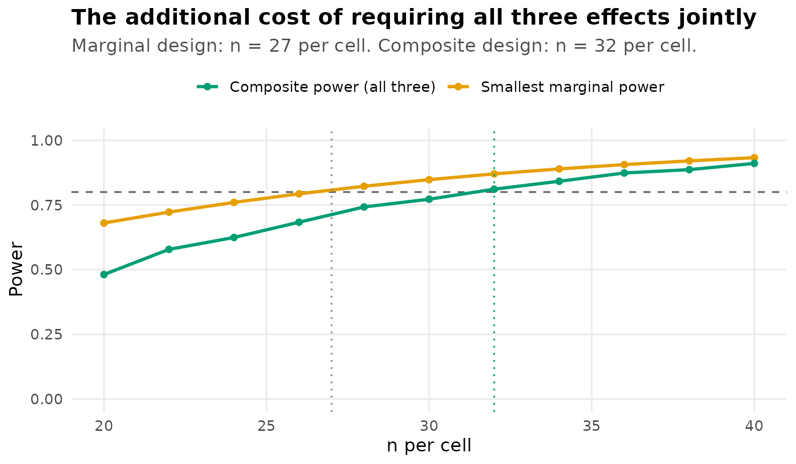
| n per cell | total N | composite power |
|---|---|---|
| 20 | 80 | 0.481 |
| 22 | 88 | 0.578 |
| 24 | 96 | 0.624 |
| 26 | 104 | 0.683 |
| 28 | 112 | 0.742 |
| 30 | 120 | 0.772 |
| 32 | 128 | 0.811 |
| 34 | 136 | 0.842 |
| 36 | 144 | 0.874 |
| 38 | 152 | 0.887 |
| 40 | 160 | 0.911 |
Composite power reaches
at approximately 32 per cell, a total of
128, compared with the 108 required for each effect individually.
Because these are simulation estimates, the exact crossing point varies
slightly between runs; increasing reps reduces that
variability. The distinction between powering each effect and powering
the complete pattern is central to planning multi-effect studies, and
the difference grows as the number of required effects increases.
Analytic Versus Monte Carlo Power
Analytic power evaluates the exact noncentral
or
distribution for one effect at a time, treating the design as fixed. It
is immediate, free of simulation error, and is the method used
internally by ss_power_contrast,
ss_power_factorial_ancova, and
ss_power_reg_coef. It applies to the power of a single
contrast, main effect, interaction, or regression coefficient in a
balanced design with homogeneous, normally distributed errors.
Monte Carlo power generates many datasets, analyzes each in the manner intended for the real study, and records the rejection rate. It is slower and carries sampling error, but it applies when a closed-form result is unavailable:
- composite or joint power for several correlated effects;
- designs with random predictors, such as a continuous moderator and the product terms formed from it;
- unequal cell sizes, heterogeneous variances, non-normal outcomes, or analysis procedures more elaborate than the formula assumes.
In practice both are used together: marginal sample sizes are obtained analytically, and the joint or non-standard components are verified by simulation. Where the two disagree, the simulation reflects the analysis actually planned and is the more appropriate basis for the decision.
The Moderator as a Covariate
Suppose a continuous moderator can also be measured at baseline, such as prior experience, correlating with the outcome. Such a variable can serve two distinct functions, and it is useful to separate them.
The first function requires no interaction at all. Including as a covariate makes the analysis an analysis of covariance, and the covariate absorbs error variance. With squared multiple correlation between the covariate and the outcome, the error variance is reduced by the factor , so an effect of size on the analysis of variance metric behaves as under analysis of covariance, at a cost of one error degree of freedom per covariate:
rho <- 0.2
R2 <- rho^2
f_int <- ss_power_contrast(contrasts_list[["Interaction"]], mu = mu,
sigma_squared = sigma2, desired_power = .80)$value[5]
c(R2 = R2, variance_retained = 1 - R2,
f_unadjusted = f_int, f_adjusted = f_int / sqrt(1 - R2))
#> R2 variance_retained f_unadjusted f_adjusted
#> 0.0400000 0.9600000 0.3181981 0.3247595With the squared correlation is only , so the error variance is reduced by four percent and the interaction’s increases from to about :
ss_power_factorial_ancova(factor_levels = c(2, 2), effect_indices = c(1, 2),
f = f_int, covariate_R2 = 0, n_covariates = 0,
desired_power = .80)| term | value |
|---|---|
| necessary_n_per_cell | 20 |
| total_N | 80 |
| actual_power | 0.802 |
| df_effect | 1 |
| df_error | 76 |
| f | 0.318 |
| f_adjusted | 0.318 |
| covariate_R2 | 0 |
| n_covariates | 0 |
| noncentrality | 8.1 |
| alpha_level | 0.05 |
ss_power_factorial_ancova(factor_levels = c(2, 2), effect_indices = c(1, 2),
f = f_int, covariate_R2 = R2, n_covariates = 1,
desired_power = .80)| term | value |
|---|---|
| necessary_n_per_cell | 20 |
| total_N | 80 |
| actual_power | 0.818 |
| df_effect | 1 |
| df_error | 75 |
| f | 0.318 |
| f_adjusted | 0.325 |
| covariate_R2 | 0.04 |
| n_covariates | 1 |
| noncentrality | 8.44 |
| alpha_level | 0.05 |
Power at per cell increases from about to about . The gain is real but modest. The figure below shows why, by varying the covariate’s correlation with the outcome and reading off the interaction’s power at a fixed per cell. Meaningful reductions in required sample size occur only when the covariate correlates substantially with the outcome; at the improvement is negligible relative to the degree of freedom expended.
rho_grid <- seq(0, 0.7, by = 0.025)
cov_pow <- sapply(rho_grid, function(rr)
ss_power_factorial_ancova(factor_levels = c(2, 2), effect_indices = c(1, 2),
f = f_int, covariate_R2 = rr^2, n_covariates = 1,
n_per_cell = 20)$value[2])
pow_at_02 <- cov_pow[which.min(abs(rho_grid - 0.2))]
ggplot(data.frame(rho = rho_grid, power = cov_pow), aes(rho, power)) +
geom_line(linewidth = 1, color = agent_cols[["Machine"]]) +
geom_vline(xintercept = 0.2, linetype = "dashed", color = "grey40") +
annotate("point", x = 0.2, y = pow_at_02, size = 3, color = accent) +
annotate("text", x = 0.22, y = pow_at_02, hjust = 0, vjust = 1.6, size = 3.2,
color = "grey20",
label = sprintf("rho = .2 gives power %.2f", pow_at_02)) +
labs(title = "Power gain as a function of covariate strength",
subtitle = "Interaction power at n = 20 per cell, with one covariate",
x = "Covariate correlation with the outcome", y = "Interaction power")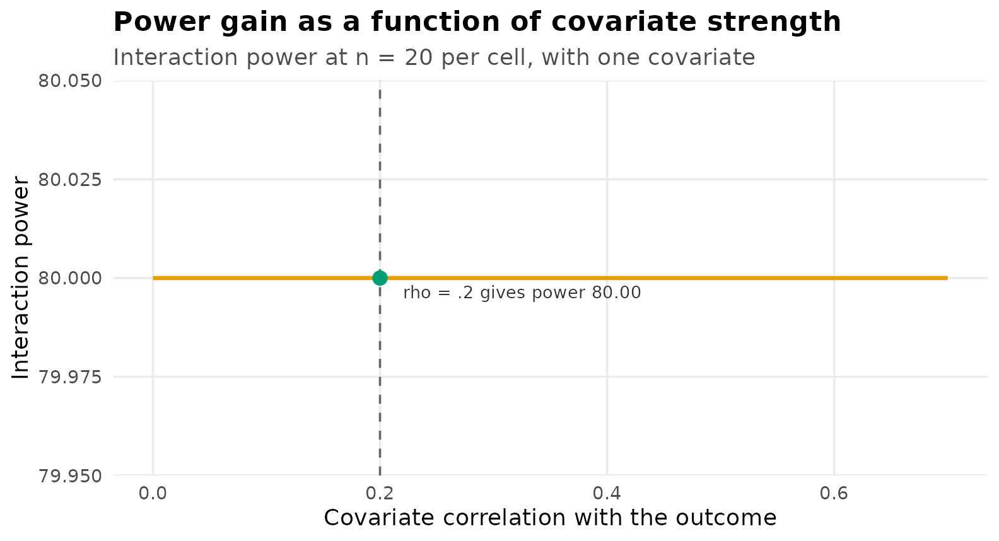
The Moderator as a Three-Way Interaction
The second function of a moderator is substantive. The question is not whether correlates with the outcome, but whether the Agent × Condition interaction itself depends on : whether, for instance, the treatment eliminates the human advantage only among less experienced participants. That is a three-way interaction, Agent × Condition × Moderator.
Because is continuous, the model is expressed as a regression. Effect-code the factors, , standardize , and write
The cell means determine the analysis of variance coefficients (, , , ), and the correlation determines . The coefficient , which governs the size of the three-way interaction, is a separate quantity that the cell means do not determine. The value carries no information about the magnitude of the three-way interaction. Since the difference between the two simple-effect differences equals as varies, is interpretable as the change in the interaction per standard deviation of the moderator.
We set , which as shown below corresponds to (Cohen, 1988).
Visualizing the Three-Way Interaction
The clearest way to specify is to display it. The top row shows the population interaction plots at , , and standard deviation for the small three-way interaction used in the plan. The bottom row shows a larger three-way interaction, included only to calibrate the eye. The separation between the two lines at the Treatment level increases with , and it does so gradually when the three-way interaction is small.
b0 <- 4; bA <- 1.1; bB <- 2.0; bAB <- 1.8; bM <- 0.38
cell_mean <- function(agent, cond, m, gamma) {
A <- ifelse(agent == "Human", 0.5, -0.5)
B <- ifelse(cond == "Control", 0.5, -0.5)
b0 + bA*A + bB*B + bAB*A*B + bM*m + gamma*A*B*m
}
grid3 <- expand.grid(Agent = c("Human", "Machine"),
Condition = c("Control", "Treatment"),
m = c(-1, 0, 1), gamma = c(0.8, 1.6))
grid3$mu <- mapply(cell_mean, grid3$Agent, grid3$Condition, grid3$m, grid3$gamma)
grid3$Condition <- factor(grid3$Condition, levels = c("Control", "Treatment"))
grid3$Mlab <- factor(grid3$m, levels = c(-1, 0, 1),
labels = c("M = -1 SD", "M = 0", "M = +1 SD"))
grid3$Glab <- factor(grid3$gamma, levels = c(0.8, 1.6),
labels = c("small (gamma = 0.8)", "larger (gamma = 1.6)"))
ggplot(grid3, aes(Condition, mu, color = Agent, group = Agent)) +
geom_line(linewidth = 0.9) + geom_point(size = 2.3) +
facet_grid(Glab ~ Mlab) +
scale_color_manual(values = agent_cols) +
labs(title = "The three-way interaction displayed",
subtitle = "The Agent × Condition interaction changes across levels of the moderator",
y = "Performance score") +
theme(panel.spacing = unit(0.9, "lines"))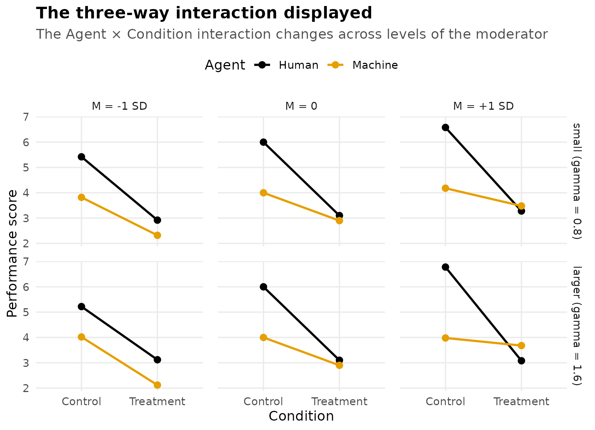
Effect Sizes for the Moderated Model
With effect coding and mutually independent, mean-centered predictors, the terms of the model are orthogonal, and Cohen’s for any single term is its explained variance divided by the residual variance . Because gives , and is standardized so that as well,
f2_2way <- bAB^2 * 0.0625 / sigma2
f2_3way <- function(gamma) 0.03125 * gamma^2
gamma_small <- 0.8
c(f2_2way = f2_2way, f2_3way_small = f2_3way(gamma_small))
#> f2_2way f2_3way_small
#> 0.10125 0.02000Two features are worth noting. The expression for
involves
but not
,
and therefore not
,
confirming that the detectability of the three-way interaction is
governed entirely by
.
And
yields
exactly, whereas the two-way interaction’s
is roughly five times larger. Supplying each
to ss_power_reg_coef, with
predictors in the full model
(,
,
,
,
,
,
):
getN <- function(res) res$value[res$term == "necessary_N"]
N_2way <- getN(ss_power_reg_coef(cohen_f2 = f2_2way, p = 7, desired_power = .80))
N_3way <- getN(ss_power_reg_coef(cohen_f2 = f2_3way(gamma_small), p = 7,
desired_power = .80))
c(two_way = N_2way, three_way_small = N_3way)
#> two_way three_way_small
#> 80 395Required sample size is inversely proportional to , so the small three-way interaction requires roughly five times the total sample size of the two-way interaction. The figure below traces that relationship across values of and marks the value adopted here.
g_grid <- seq(0.5, 2.0, by = 0.05)
N_grid <- sapply(g_grid, function(g)
getN(ss_power_reg_coef(cohen_f2 = f2_3way(g), p = 7, desired_power = .80)))
ggplot(data.frame(gamma = g_grid, N = N_grid), aes(gamma, N)) +
geom_line(linewidth = 1, color = agent_cols[["Machine"]]) +
geom_vline(xintercept = gamma_small, linetype = "dashed", color = "grey40") +
annotate("point", x = gamma_small, y = N_3way, size = 3, color = accent) +
annotate("text", x = gamma_small + 0.05, y = N_3way, hjust = 0, vjust = -0.6,
size = 3.3, color = "grey20",
label = sprintf("gamma = 0.8 (f2 = .02): N = %d", N_3way)) +
labs(title = "Sample size required for the three-way interaction",
subtitle = "Total N for power of .80, as a function of the three-way coefficient",
x = "gamma (change in the interaction per SD of the moderator)",
y = "Total N required")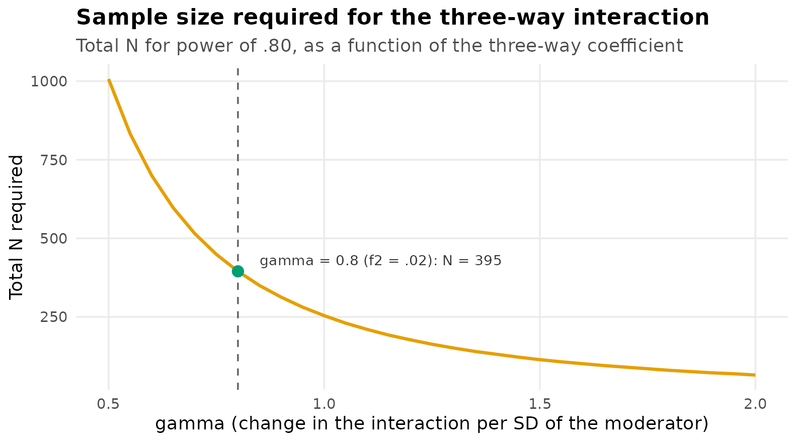
Confirming the Plan by Simulation
The analytic sample size treats the predictors as fixed. A continuous
moderator is random, however, and so are the product terms constructed
from it, so the appropriate verification is to simulate the regression
that would actually be estimated. The population is constructed as
specified, with
chosen so that
,
and the model lm(y ~ A*B*M) is fitted to each generated
sample:
simulate_threeway_power <- function(N, gamma, rho = .2, reps = 1500, seed = 113) {
sigma_e <- sqrt(2)
varY_less_M <- bA^2*.25 + bB^2*.25 + bAB^2*.0625 + gamma^2*.0625 + sigma_e^2
betaM <- sqrt(rho^2 * varY_less_M / (1 - rho^2))
set.seed(seed)
hit3 <- hit2 <- logical(reps)
for (r in seq_len(reps)) {
A <- sample(c(-.5, .5), N, TRUE); B <- sample(c(-.5, .5), N, TRUE); M <- rnorm(N)
y <- b0 + bA*A + bB*B + bAB*A*B + betaM*M + gamma*A*B*M + rnorm(N, 0, sigma_e)
cf <- summary(lm(y ~ A * B * M))$coefficients
hit3[r] <- cf["A:B:M", "Pr(>|t|)"] < .05
hit2[r] <- cf["A:B", "Pr(>|t|)"] < .05
}
c(three_way = mean(hit3), two_way = mean(hit2))
}
mc_small <- simulate_threeway_power(N_3way, gamma = gamma_small)
round(mc_small, 3)
#> three_way two_way
#> 0.794 1.000At the analytic sample size the simulated power for the three-way
interaction is approximately 0.79, slightly below
.
This reflects the difference between fixed and random predictors noted
in the ss_power_reg_coef documentation, under which random
predictors require a somewhat larger sample for the same power. Sweeping
across sample sizes locates the value that achieves
in the random-predictor case:
N_try <- c(N_3way, 420, 440, 460)
mc_by_N <- sapply(N_try, function(NN)
simulate_threeway_power(NN, gamma = gamma_small)["three_way"])
N_mc80 <- N_try[which(mc_by_N >= 0.80)[1]]
ggplot(data.frame(N = N_try, power = mc_by_N), aes(N, power)) +
geom_hline(yintercept = 0.80, linetype = "dashed", color = "grey40") +
geom_vline(xintercept = N_3way, linetype = "dotted", color = "grey55") +
geom_line(linewidth = 1, color = accent) +
geom_point(size = 2.6, color = accent) +
geom_text(aes(label = sprintf("%.2f", power)), vjust = -0.9, size = 3.3) +
annotate("text", x = N_3way, y = 0.755, angle = 90, vjust = -0.4, size = 3,
color = "grey40", label = sprintf("analytic N = %d", N_3way)) +
labs(title = "Random predictors require a larger sample than the fixed-predictor formula",
subtitle = "Monte Carlo power for the small three-way interaction (gamma = 0.8)",
x = "Total N", y = "Three-way power (Monte Carlo)") +
ylim(0.72, 0.90)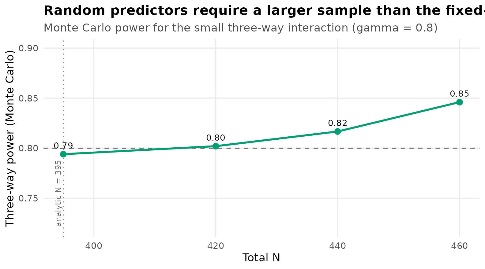
Power of is reached near 420, above the fixed-predictor value of 395. A design required to detect both the two-way interaction and this small three-way interaction is governed entirely by the latter, so 420 satisfies both; the two-way interaction, requiring only 80, is then powered well beyond .
Summary
ladder <- data.frame(
plan = c("Each targeted effect alone (.80)",
"Composite: all three jointly (.80)",
"Two-way interaction in the moderated model",
"Small three-way interaction (analytic)",
"Small three-way interaction (Monte Carlo)"),
N = c(4 * n_design, 4 * n_comp80, N_2way, N_3way, N_mc80))
ladder$plan <- factor(ladder$plan, levels = rev(ladder$plan))
ggplot(ladder, aes(N, plan, fill = N)) +
geom_col(width = 0.62, show.legend = FALSE) +
geom_text(aes(label = N), hjust = -0.2, size = 3.6) +
scale_fill_gradient(low = unname(grDevices::palette.colors(3))[2], high = unname(grDevices::palette.colors(3))[1]) +
labs(title = "Total sample size by planning objective",
x = "Total N", y = NULL) +
xlim(0, max(ladder$N) * 1.18)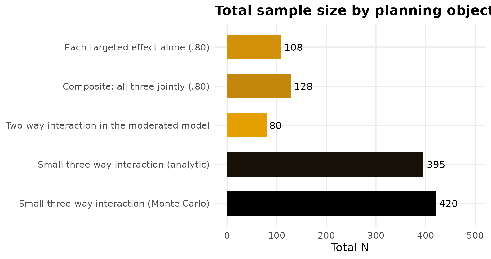
| Planning objective | Function | Method | Total |
|---|---|---|---|
| Each targeted effect alone at | ss_power_contrast |
analytic | 108 |
| Composite power of for all three | simulation | Monte Carlo | 128 |
| Two-way interaction with covariate | ss_power_factorial_ancova |
analytic | 80 |
| Two-way interaction in the moderated model | ss_power_reg_coef |
analytic | 80 |
| Small three-way interaction (, ) |
ss_power_reg_coef and simulation |
both | 395 and 420 |
Four conclusions follow from this analysis.
- A 2 × 2 design contains several effects with very different sample size requirements. Planning should target the effect that the study can least afford to miss, which is often a moderate simple effect or the interaction rather than the largest effect. In this design one simple effect, the human advantage under Treatment, is too small to be a feasible target at all.
- Composite power is smaller than any individual marginal power. When a conclusion requires several effects to be detected together, the study should be sized for the conjunction.
- A covariate correlated with the outcome yields little gain in power, whereas allowing that same variable to moderate the interaction introduces a substantially more demanding sample size requirement.
- Closed-form results should be used where they are exact, and simulation where they are not. Marginal power for a single effect is analytic; joint power across effects, and any design with random predictors, calls for Monte Carlo.